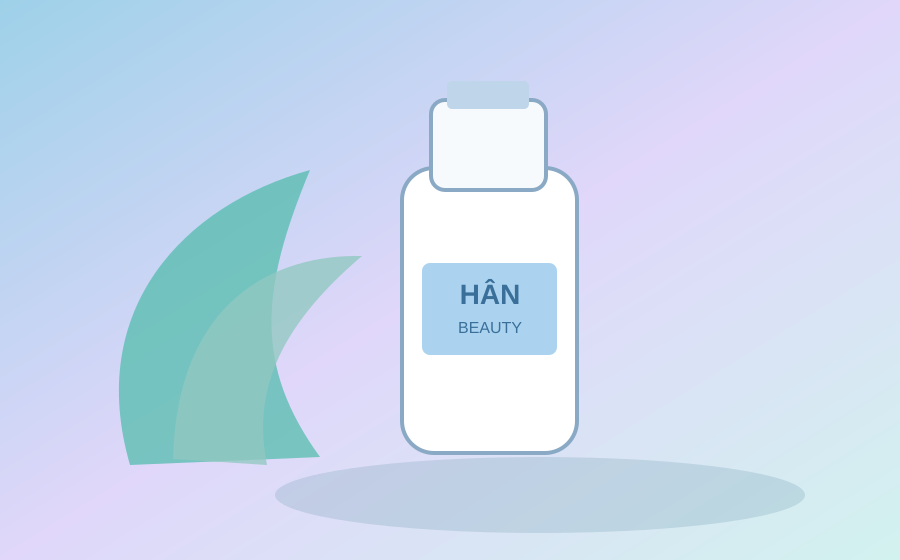

LAB 07 / EXERCISE 7.17
Filters
Thực hành 9 hiệu ứng CSS filter trên cùng hình ảnh.

GốcGrayscale
Blur
Contrast
Brightness
Sepia
Hue-rotate
Invert
Opacity
Thao tác kiểm tra: Đối chiếu chín CSS filter.
Thực hành 9 hiệu ứng CSS filter trên cùng hình ảnh.

GốcThao tác kiểm tra: Đối chiếu chín CSS filter.